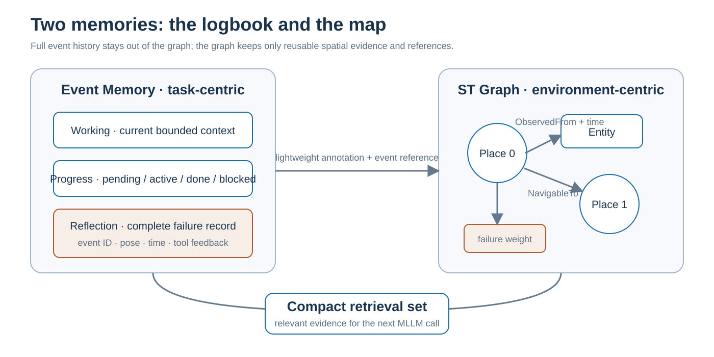
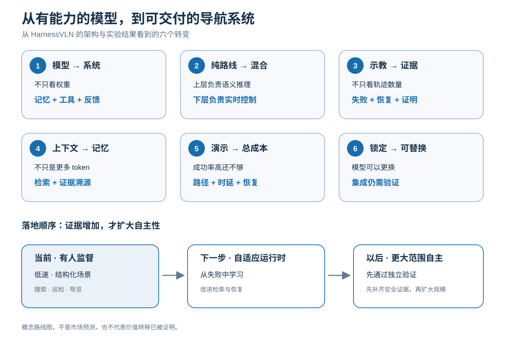

NOTE 23 / 具身模型 · Agent 导航
HarnessVLN：
给冻结大模型接上证据闭环
大模型可以提议“向左走”或“停止”，但不直接控制环境。HarnessVLN 更值得关注的行业信号是：具身导航的竞争正从单个模型，扩展到记忆、工具、执行反馈与独立验收组成的系统能力。
先说结论
- 机制：HarnessVLN 不是新训练一个导航大模型，而是用运行时把冻结 MLLM、工具、记忆和执行器组织起来。模型只提议，Harness 校验并决定执行。
- 实验：它提高了论文所列免训练方法的成功率，但不等于所有指标领先；全景观察和停止判定仍是明显瓶颈。
- 行业：具身导航的差异化正在从基座模型扩展到记忆、工具、执行反馈和独立验收。近期更现实的是混合架构，而不是大模型替代全部控制栈。
- 边界：training-free 只是不做导航任务专门微调；它仍依赖预训练模型、人工规则和专用工具，也不构成通用安全保证。
论文是 HarnessVLN: Unifying Training-Free Embodied Navigation through an Agent Harness，arXiv:2609.15195。下面依次展开数据流、双层记忆、停止验证、实验证据与行业趋势。
名词与版本。Harness 在这里指包裹模型的运行时编排层，与机器人 wire harness（线束）无关。本文以论文 v3（2026-09-29）为主；项目页部分演示和数字采用其他口径，不与论文主表混排。图为本站原创机制示意，不是官方实机录像或时延测量。
1. 核心思想：提议权与执行权分开
在不少 MLLM 导航流水线里，感知模块给观测，大模型提出子目标，下游直接执行。问题在于：证据可能丢失，提议可能无依据，失败可能没有进入下一轮决策。
HarnessVLN 把冻结的通用 MLLM 放在运行时外壳里。模型仍做指令拆解、规划、语义验证和恢复等角色，但这些角色通过提示词切换；它输出的是结构化操作申请，而不是不可审查的环境动作。
→ MLLM 提议 → Harness 校验 → 工具执行
→ 结构化反馈 → 更新记忆与图 → 下一轮决策
两个任务共用这套协议：指令跟随（R2R / RxR）把路线段、运动约束和地标放入进度状态；物体导航（HM3D-v2 / OVON）跟踪探索区域、候选目标和验证状态。任务差异主要落在进度表示与完成判据，不是另写一套运行时。
Training-free 的准确含义是不做导航任务专门微调。系统仍依赖预训练 MLLM、GroundingDINO、SAM、深度模型以及可能的 NavDP；它不是“没有训练成本”，而是“这次不为导航任务重新训练模型”。
2. 动图：一轮决策怎样流动

论文用状态 S_t = (x, ω_t, p_t, z_t, M_t, G_t) 表示任务、当前位姿对齐的 RGB-D 观测与局部地图、机器人位姿、任务进度、事件记忆和时空图。Algorithm 1 可以压缩成下面这段：
while state is not terminal:
observe if pose and observation are inconsistent
record event and consolidate the ST graph
retrieve experience for the active subgoal
assemble a compact context
proposal = frozen_MLLM(context)
checked = validate(proposal, state)
feedback = dispatch_tool(checked)
update state, event memory and graph校验发生在工具分发之前，覆盖参数契约、证据来源与新近性、几何可行性、当前子目标一致性和相关失败史。若提议被拒绝，拒绝本身也会成为事件；它不是静默丢弃，更不是让模型再猜一次就算完成。
进度记忆中的子目标有 pending / active / completed / blocked 四态，最多一个 active。模型可以申请更新 TODO，但 completed 必须有位姿对齐观测或成功工具结果支撑。
3. 双层记忆：航海日志与海图

| 机制 | 存什么 | 为什么需要 |
|---|---|---|
| Working memory | 当前观测、有界全景历史、活跃假设与近期反馈 | 保住当前决策需要的短上下文 |
| Progress memory | 子目标状态与完成证据 | 防止模型凭想象推进任务 |
| Reflection memory | 不可达、落地不一致、碰撞、无进展、回退失败和停止被拒等完整事件 | 让失败成为下一轮可检索的证据 |
| ST Graph | Place、Entity、NavigableTo、ObservedFrom、Contains，以及时间和轻量标注 | 保存空间结构、证据来源和可回退拓扑 |
检索时，Harness 按当前子目标对 Place 排名：语义相关、新近性和空间显著性加分，适用的历史失败减分，再取少量种子与邻近关系喂给模型。图可以增长，模型上下文不必随轨迹等比例增长。
这里的“持久”主要指任务内跨子目标保留与合并空间证据，不等于论文已经给出跨 episode 的终身记忆或磁盘序列化实现。官方仓库在本文核查时仍写着后续开源，具体图存储格式不能自行假定。
4. 工具与执行：慢语义，快控制
统一接口暴露八类工具：observe、observe_panorama、retrieve_memory、ground_target、query_depth、navigate_to、backtrack 和 request_stop。每个工具返回执行状态、测量值或失败证据，而不是只返回一个布尔值。
例如模型提出 navigate_to(target)，Harness 验证后交给 Navigation Executor；执行器负责路径规划和局部运动，直到到达、碰撞、不可达或没有进展，再把结构化结果交回。MLLM 不需要插到每个伺服控制周期里。
执行层：路径规划 / 局部控制 / 状态反馈
一次通过验证的语义目标，可以对应一段连续执行
论文的执行器在平面运动中使用 FMM，在需要楼梯通行时调用 NavDP。原文没有完整给出二者切换判定细节，不应自行写成“失败时必然切换”或“高程阈值自动路由”。统一接口的意义在于替换执行器不必改变模型协议，而不是宣称执行器选择已经全自动化。
真机部分使用 A3 Ultra、机载 NVIDIA Thor、双目深度与本地模型，展示同一协议进入真实环境。但这只是部署证据，不等于任意机器人都能免标定接入。
5. 停止三重门：说到了不等于到了
论文最重要的工程分界是：模型的 STOP 只是 request_stop，Harness 才决定是否向环境发停止。
| 因子 | 检查什么 | 证据 |
|---|---|---|
| 语义 | 视野里的目标类别是否正确，是否只是相似物 | 模型验证提示与 GroundingDINO / SAM 等工具 |
| 几何 | 目标是否足够近，深度是否新鲜且稳定 | 深度区域统计或投影导航目标距离；具体阈值按任务协议 |
| 进度 | 最后路线段、地标和终点是否都有支撑 | 进度状态与证据引用 |
任一条件不满足，停止请求被拒绝，系统可以继续观测、细化目标、接近或回退。拒绝也进入 Reflection memory。
这些检查仍不替代 benchmark 的测地成功判据，更不是安全证明。论文附录就有“接近自己选中的目标，但实际终点错误”和“深度阈值通过，benchmark 仍判失败”的案例。语义与几何共同减少误停，但不能保证语义识别和终点选择永远正确。
6. 实验：成功率、消融与效率账
论文 v3 在四个 val-unseen 协议上报告如下成功率：
| Benchmark | 任务 | SR | 读法 |
|---|---|---|---|
| R2R-CE | 指令跟随 | 59.6% | 超过论文列出的免训练 HSGM 47.9% |
| RxR-CE | 指令跟随 | 51.4% | 超过 HSGM 41.8% |
| HM3D-v2 | 物体导航 | 76.0% | 超过免训练 MSGNav 74.4% |
| HM3D-OVON | 开放词汇物体导航 | 59.3% | 超过 DRIVE-Nav 50.2%，也超过表内训练型参照 |
这支持“统一 Harness 提升任务完成”，但不能读成所有指标都领先。R2R Rand100 上，HarnessVLN 的 SR 58.0%、SPL 35.85%；同基座 AgenticNav 的 SR 55.0%、SPL 48.4%。成功率更高，路径效率仍可能更差。
固定 100 集子集的累计消融更直接：
| 累计开启 | R2R SR | HM3D-OVON SR |
|---|---|---|
| 裸 agent | 43.0% | 45.0% |
| + 事件记忆 | 50.0% | 52.0% |
| + ST Graph | 56.0% | 53.0% |
| + 停止验证 | 58.0% | 55.0% |
这是累计开启，不是各组件独立贡献。记忆先增加 7 个点，图与停止门在其上继续增加；不同任务的图收益并不相同。
效率账也值得看：R2R Rand100 的 1000 步诊断中，观察旋转占全部环境动作的 54.85%。预算从 500 增到 1000，SR 从 58.0% 到 61.0%，SPL 与 nDTW 略降。问题不只是“还能走几步”，而是“多少步花在看一圈”。
7. 行业位置：竞争正在从模型扩展到运行时
下面是基于论文架构与实验做的行业判断，不是论文原话，也不是市场份额统计。HarnessVLN 最值得注意的信号是：在导航这类长时序任务里，模型能力只是上限的一部分，证据组织、工具协议、执行反馈和验收系统决定其中多少能兑现。
| 产业环节 | 论文里的信号 | 我的判断 |
|---|---|---|
| 通用基座模型 | 冻结 MLLM 承担语义理解与规划，可替换基座 | 基座仍重要，但应用方不必把全部竞争力押在某个私有模型上 |
| Harness、记忆与工具 | 检索、校验、进度、失败和终止形成独立运行时 | 这一层会成为机器人软件的重要工程资产，类似 Agent 时代的应用基础设施 |
| 执行器与本体适配 | FMM、NavDP、深度和真机控制被封装为工具 | 实时控制、标定、硬件可靠性不会被大模型取代，反而决定系统能否交付 |
| 评测与运行数据 | 成功、路径效率、观察开销和失败记录需要同时管理 | 价值会从一次性示教数据扩展到持续运行数据、失败案例和独立验收 |
这不意味着运行时一定比模型更值钱，也不代表利润已经被证明向某一层转移。更稳妥的结论是：具身产品的差异化来源正在从单个模型，扩展到“模型 + 工具 + 本体 + 数据闭环 + 验收”的组合。
8. 六个趋势与落地节奏

趋势一：从模型中心转向系统中心。同一基座可以通过更好的记忆、校验和执行获得更高成功率。应用团队需要优化的不只是权重，还有状态结构和反馈协议。
趋势二：纯端到端与纯规则之间，混合架构更现实。通用 MLLM 负责低频语义决策，专用模型或经典规划器负责接触、路径和实时控制。端到端路线不会消失，但系统边界会按延迟、可验证性和安全责任重新划分。
趋势三：数据价值从示教数量扩展到运行反馈。Training-free 减少任务专门微调，却让失败日志、检索证据、验收结果和恢复记录更重要。未来可学习的不只是模型，也包括规则、检索权重和恢复策略。
趋势四：记忆从“更长上下文”变成独立基础设施。长上下文只解决能装多少；时空图还回答在哪里看到、证据是否过期、失败是否适用于当前子目标。这会推动记忆、检索和可观测性进入机器人运行时。
趋势五：评价从 Demo 和 SR 转向总拥有成本。SR 不回答一次任务耗时多久、调用了多少模型、转了多少次全景，也不回答误停和恢复成本。SPL、时延、能耗、人工接管率和失败恢复率会更接近真实采购指标。
趋势六：模型可替换性提高，系统集成与验收更重要。统一工具接口让换模型更容易，但也把竞争压力推向执行可靠性、数据治理和独立评测。模型升级可以带来收益，却不能替代系统验收。
落地顺序上，我更看好低速、有人监督、环境相对结构化的室内搜索、巡检、导览和取送任务；动态人群、高速运动和失败代价高的任务仍需要更强的实时控制与安全保证。近期主流更可能是混合系统，远期再逐步把经过验证的规则和恢复经验学习化。
9. 它解决了什么，还缺什么
- 解决的是运行时协调。证据、进度、失败和终止有了共同状态；不是消除了感知、规划和控制模块。
- 规则仍是人工预定义。论文明确把自进化留作未来工作；没有覆盖的失效模式仍可能穿过规则。
- 共同误判仍可能存在。模型与开放词汇检测器可以把同一物体认错；几何检查也只能发现其中一类不一致。
- 观察与推理成本很高。全景动作、多个工具和大模型上下文都要计入系统预算。
- 公开复现仍受实现开放程度限制。本文核查时官方仓库只提供项目入口和后续开源说明，不能把论文机制当成已可一键复现的代码。
10. 对机器人项目的可复用设计
| 设计 | 可以怎样借鉴 | 不能省掉什么 |
|---|---|---|
| 提议与执行分权 | 模型输出结构化目标，由确定性运行时审查与分发 | 限位、碰撞、急停和实时保护 |
| 子目标证据状态机 | 完成必须绑定观测或工具结果，blocked 必须可追踪 | 状态迁移规则和独立验收 |
| 日志与空间索引分层 | 完整事件留档，地图只保存可复用标注和引用 | 时间、坐标系与证据失效管理 |
| 证据驱动停止 | 把语义、几何与任务进度拆开检查 | 与独立成功判据对照，不能由模型自证 |
| 统一工具接口 | 让仿真与真机执行器共享调用契约 | 具体执行器能力和安全边界验证 |
一句话总结：HarnessVLN 的价值不是让大模型直接学会导航，而是让模型的每次提议都面对证据、每次执行都留下反馈、每次失败都有机会进入下一轮。
论文与项目：HarnessVLN arXiv:2609.15195 · 论文 v3 全文 · 项目页与演示 · 官方仓库
相关笔记：把大模型放在闭环外面（模型与运行时的分工） · 机器人数据格式全景（观测、日志与训练数据） · 机器人标定（位姿对齐与时间证据） · 代价地图（几何通行性）